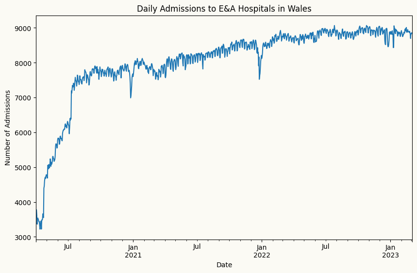

peshbeen is a Python forecasting library built around a single idea: the forecasting workflow should be the same regardless of the model. The name draws from Kurdish — pesh (“front”) and been (“to see/be”) — combining to mean foresight. The library provides a unified interface spanning a wide range of models: from ARIMA and Vector Autoregressions to scikit-learn regressors and gradient-boosted trees (XGBoost, LightGBM, CatBoost). Whether you’re working with univariate or multivariate time series, peshbeen automates the heavy lifting — feature engineering, lag generation, and stationarity transformations — so you can focus on forecasting.
Key Features
Unified API: Train any model using a simple .fit(df) and .forecast(H) workflow, eliminating the need for manual feature/target splitting.
Model Agnostic: Supports a wide range of forecasting models, including ETS, ARIMA, Vector Autoregressions, scikit-learn regressors, and gradient-boosted trees (XGBoost, LightGBM, CatBoost).
Automatic Feature Engineering: User can specify the key following parameters to automatically generate features:
lags: List of lag periods to create lag features.
rolling_windows: List of window sizes for rolling statistics to create rolling features (e.g., rolling mean, rolling std, rolling quantiles).
trend removal: Option to automatically difference the data or de-trend it using global trend, local trend, or piecewise linear trend. For piecewise linear trend, the user can specify the indexes of the breakpoints. For local trend, the user can pass ETS parameters to fit a local ETS model and use its fitted values as the local trend.
boxcox: Option to apply Box-Cox transformation to target variable to stabilize variance.
Multivariate Forecasting: Supports forecasting with multiple target variables and exogenous regressors, making it suitable for multivariate forecasting tasks where relationships between variables can be leveraged for improved accuracy.
Probabilistic Forecasting: Enables probabilistic forecasting through a simple two-step workflow. First, call calibrate with a held-out portion (calibration data) of your dataset — peshbeen uses the residuals at each horizon to fit the uncertainty model. Then call sample to generate forecast scenarios and prediction intervals, giving you a full picture of forecast uncertainty for risk assessment and decision-making.
Four methods are implemented for generating probabilistic forecasts:
Empirical & Kernel Density Estimation (KDE): This method generates probabilistic forecasts by resampling from the empirical distribution of the residuals. By adding these resampled residuals to the point forecasts, we can create a distribution of possible future values. KDE can be applied to these resampled forecasts to obtain a smooth probability density function, which can then be used to derive prediction intervals and quantiles.
Correlated Bootstrap: This method generates probabilistic forecasts by resampling from the residuals while preserving the correlation structure across different forecast horizons. By resampling entire rows of residuals (i.e., all horizons together), we can maintain the temporal dependencies and correlations between forecast errors at different horizons, leading to more realistic forecast scenarios.
Conformal Prediction: This method generates probabilistic forecasts by applying conformal prediction techniques to the residuals. By calculating nonconformity scores based on the residuals and using them to determine prediction intervals.
Hyperparameter Tuning: Provides built-in support for hyperparameter tuning using Hyperopt and Optuna, allowing users to optimize model performance with minimal effort.
Installation
Installation requires Python 3.8 or higher.
Run the following command in your terminal to install the latest version from PyPI:
pip install peshbeen
If you are using a Conda environment, you can still install peshbeen via pip once your environment is active:
conda activate your_env_namepip install peshbeen
Quick Start Example
from peshbeen.datasets import load_wales_admissions # addmissions to E&A hospitals in Walesfrom peshbeen.models import ml_forecasterfrom peshbeen.transformations import rolling_mean, rolling_std, expanding_meanfrom xgboost import XGBRegressorload_wales_admissions["day_of_week"] = load_wales_admissions.index.dayofweek # add day of week as a featureload_wales_admissions["month"] = load_wales_admissions.index.month # add month as a feature to capture seasonalityload_wales_admissions["day_of_month"] = load_wales_admissions.index.day # add day of month as a feature to capture seasonality# split the data into train and test setstrain = load_wales_admissions[:-30]test = load_wales_admissions[-30:]cat_variables = ["day_of_week", "month", "day_of_month"]transforms = [rolling_mean(window_size=28, shift=7), rolling_std(window_size=28), expanding_mean()] # import linear regression from sklearnfrom sklearn.linear_model import LinearRegressionml_linear = ml_forecaster(model=XGBRegressor(), target_col='admissions', lags =6, cat_variables=cat_variables, lag_transform=transforms)ml_linear.fit(train)forecasts = ml_linear.forecast(H=30, exog=test[cat_variables])
/Users/aslanm/Desktop/my_desk/peshbeen/.venv/lib/python3.14/site-packages/hyperopt/atpe.py:19: UserWarning: pkg_resources is deprecated as an API. See https://setuptools.pypa.io/en/latest/pkg_resources.html. The pkg_resources package is slated for removal as early as 2025-11-30. Refrain from using this package or pin to Setuptools<81.
import pkg_resources
## Plot the historical dataimport matplotlib.pyplot as pltload_wales_admissions["admissions"].plot(figsize=(10, 6), label='Admissions')plt.title("Daily Admissions to E&A Hospitals in Wales")plt.xlabel("Date")plt.ylabel("Number of Admissions")plt.show()

# plot the forecast against the actual valuesplt.figure(figsize=(10, 6))plt.plot(train.index[-90:], train['admissions'][-90:], label='Train')plt.plot(test.index, test['admissions'], label='Test')plt.plot(test.index, forecasts, label='Forecast')plt.legend()plt.show()